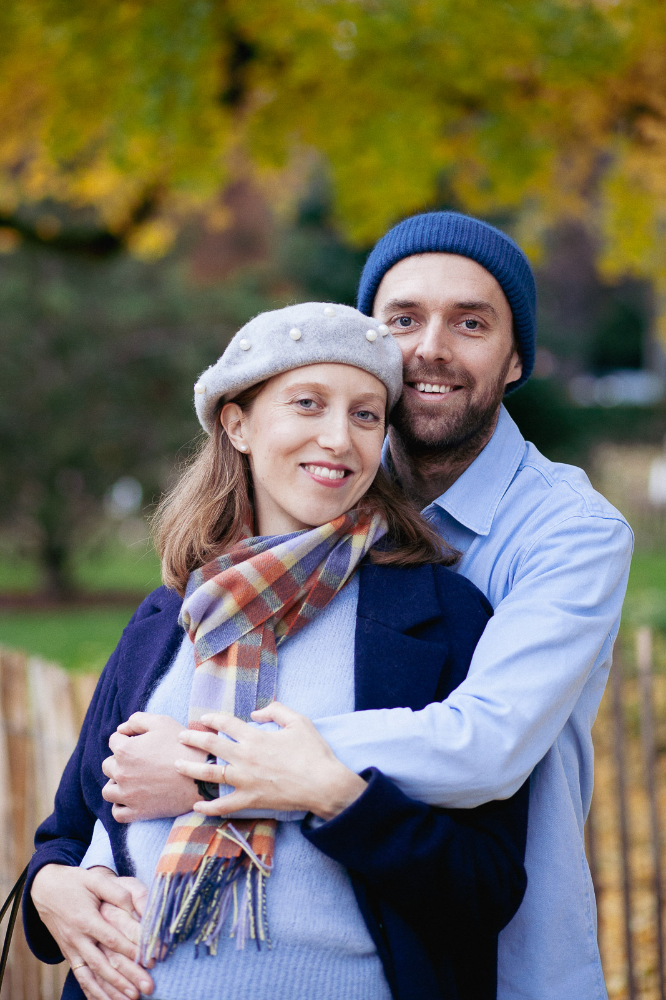

Un écrin de couleurs
L'été est peut-être ma saison favorite pour la longueur de ses journées, mais je dois bien reconnaître que l'automne offre les couleurs les plus spectaculaires et particulièrement propices à une séance photo de couple en plein air !
Pendant quelques semaines, la nature nous offre un véritable écrin à ciel ouvert. Voici quelques-uns des souvenirs créés pour Tanguy et Mathilde, à l'occasion d'un magnifique après-midi d'automne à Strasbourg.
Une promenade sous la canopée urbaine
Plutôt qu'une suite de scènes et de poses compliquées, je préfère que la séance photo se déroule comme une promenade entre amis, au cours de laquelle l'appareil n'est presque qu'un accessoire.
Les plus beaux instants surviennent toujours après quelques minutes passées à faire connaissance en marchant. Peu à peu, on commence à oublier la présence de l'objectif.
Raconter une histoire d'amour
Dans ce monde qui va si vite, une séance photo c'est aussi un moment de calme, une parenthèse à deux, préservée du tumulte quotidien. Prendre le temps de marcher main dans la main, se raconter une histoire, observer la nature, écouter.
Ce temps construit aussi la confiance entre nous, et se traduit par des images beaucoup plus fidèles à vous. La beauté naturelle de la complicité et de l'amour qui unit Mathilde et Tanguy se lit dans leurs yeux et sur leurs sourires.
En toute simplicité
Pour ce très joli couple, cette journée était aussi l'occasion de célébrer un heureux événement à venir ! Un tout petit garçon qui jouait à cache-cache dans le ventre de sa maman.
Qu'il s'agisse d'une grossesse, ou simplement de l'envie de garder quelques belles images de vie à deux, je crois qu'une histoire d'amour se raconte en toute simplicité : sans chercher a fabriquer des souvenirs parfaits, mais en laissant aux émotions toute la place pour s'exprimer.
Je crois aussi à la valeur que prennent les photos avec les années qui passent : que l'on aime un jour à pouvoir se revoir, à retrouver les visages de ceux qu'on aime, et à se reconnaître vraiment dans chaque détail. Dans la façon de se regarder l'un l'autre, dans les petits gestes dont le sens n'est parfois connu que par l'autre comme un code secret.
L'automne, ce n'est bien évidemment pas qu'un spectacle de couleurs, c'est aussi une période un peu nostalgique où les journées raccourcissent, où l'on retrouve le réconfort des choses simples avant l'arrivée des fêtes de fin d'année. Une saison qui donne envie de se rapprocher, de partager un peu de douceur, et pourquoi pas de s'offrir quelques souvenirs à deux.
Et si l'automne était tout simplement la saison idéale pour une séance photo de couple ?
Avec ses couleurs chaleureuses, sa lumière dorée, et ses températures encore douces, l'automne est une invitation à la promenade.
À Strasbourg, comme cette séance dans les jardins de la Neustadt, et partout ailleurs en Alsace, les parcs et les espaces verts deviennent autant de décors pour réaliser de magnifiques photos.
Il n'est pas du tout nécessaire de savoir poser ou d'avoir l'habitude de l'objectif. Il suffit d'avoir envie de partager un moment ensemble, marcher un peu, et se laisser porter.
Si vous imaginez vous aussi une séance photo de couple comme celle-ci, je serais très heureux d'en discuter avec vous et de créer des images qui racontent votre histoire !
Me contacter
